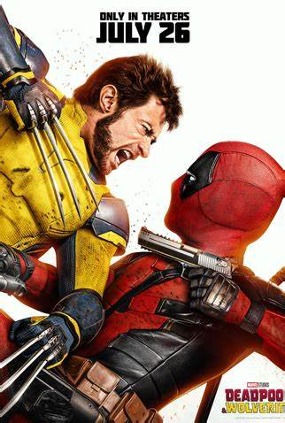

The Stuntman
The Stuntman is an action-comedy film directed by David Leitch
(Bullet Train, Deadpool 2) based on the hit 1980s series "Hard at
Fall." The story follows Colt Seavers (Ryan Gosling), a Hollywood
stuntman who had to abandon his dangerous stunt career after
suffering an accident that nearly ended his life and career.

Deadpool & Wolverine
"Deadpool and Wolverine (2024)" is the typical fan-service movie,
which might be less impactful for those who have little
appreciation for those characters. Unfortunately, I was one of
them. I enjoyed the soundtrack (which humorously mocks what one
expects to hear in a superhero film), some action scenes, and the
quips that Deadpool made.

The Thundermans Return
The Thundermans are back! Nickelodeon UK & Ireland will premiere
"The Thundermans Return," a brand new movie based on Nickelodeon‘s
hit live-action superhero comedy series, on Thursday, March 7,
2024, at 6:00 PM! The movie will also be available to stream on
Paramount+, the streaming home of Nickelodeon.